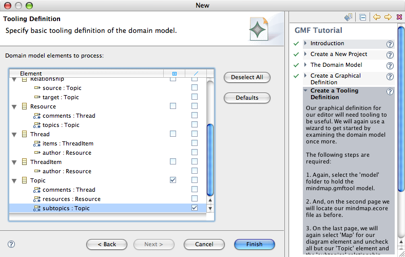

GMF Tooling Tutorial: Step 1
This tutorial will introduce the Graphical Modeling Framework (GMF), an Eclipse Modeling Project project that aims to provide a generative bridge between the Eclipse Modeling Framework (EMF) and Graphical Editing Framework (GEF).
In this tutorial, a mindmap application will be developed, as described here. This tutorial describes the functionality provided by GMF in its current state, using this build (2.0.1). It is expected that this tutorial will evolve with GMF to introduce new functionality as it is developed. New functionality will be covered by installments added to this tutorial, each with a corresponding viewlet. A viewlet for this installment of the tutorial can be found here (warning: it's a bit out of date). The complete solution to this tutorial is maintained in CVS here.
Overview of GMF
The use of both EMF and GEF for building Eclipse-based functionality is quite common. Many references below provide information on how to utilize these frameworks together, some of which inspired the GMF project itself. Before diving into a new GMF project, let's explore a little of how GMF approaches the task of utilizing EMF and GEF in a generative manner. Another article focusing on the runtime portion of GMF is found here.
The GMF project has adopted the term 'toolsmith' to refer to developers that use GMF to build plug-ins, while 'practitioner' is used to referred to those who utilize said plug-ins, and who may also be developers. From a usability perspective, the number and types of 'models' utilized by GMF internally should be hidden to the greatest extent possible. However, it is likely that most toolsmiths are interested in knowing what is going on under the covers, so a description of each model is linked from the Documentation page. Or, just import the plug-in into your workspace and browse the model locally.
GMF Overview
This is a diagram that illustrates the main components and models used during GMF-based development. Core to GMF is the concept of a graphical definition model. This model contains information related to the graphical elements that will appear in a GEF-based runtime, but have no direct connection to the domain models for which they will provide representation and editing. An optional tooling definition model is used to design the palette and other periphery (menus, toolbars, etc.).
It is expected that a graphical or tooling definition may work equally well for several domains. For example, the UML class diagram has many counterparts, all of which are strikingly similar in their basic appearance and structure. A goal of GMF is to allow the graphical definition to be reused for several domains. This is achieved by using a separate mapping model to link the graphical and tooling definitions to the selected domain model(s).
Once the appropriate mappings are defined, GMF provides a generator model to allow implementation details to be defined for the generation phase. The production of an editor plug-in based on the generator model will target a final model; that is, the diagram runtime (or "notation") model. The runtime will bridge the notation and domain model(s) when a user is working with a diagram, and also provides for the persistence and synchronization of both. An important aspect of this runtime is that it provides a services-based approach to EMF and GEF functionality and is able to be leveraged by non-generated applications.
With the basics of GMF covered, let's now walk through the process of using GMF in the development of a graphical editing surface for a particular domain. First, you will need to install GMF and its dependencies.
Setup
This version of the tutorial was written using this build of GMF (2.0.1). Note that the prerequisites are listed on the build page, which must be installed prior to installing GMF, either from the download page, or from the update manager site.
Perhaps the easiest way to get started with GMF is to start with a fresh Platform install and utilize the Europa update site, found at Help > Updates > Find and Install... Search for new features to install > Europa Discovery Site. Then, select the Graphical Modeling Framework (Europa Edition) from under the 'Models and Model Development' category and then click the 'Select Required' button to have GMF's dependencies downloaded as well. Simple, huh?
The TaiPan example referenced below is maintained in CVS and should remain functional with the latest builds of GMF, even if the tutorial is not quite up-to-date.
Quick Start
If you're anxious to see GMF in action, check out the Taipan example projects into your workspace from CVS by switching to the CVS Repository Exploring perspective and adding a repository location as shown in the image to the right. Otherwise, you can skip to the next section.
Navigate to /HEAD/org.eclipse.gmf/examples and select the org.eclipse.gmf.examples.taipan.* modules. Right-click and select Check Out. If you are not using the latest build and prerequisites of GMF, you can always check out the version of the Taipan by date to correspond with the version you're using. The important point is that you'll need to work with synchronized versions of the GMF SDK and the Taipan example. To do this, after checkout you can right-click on the projects and selecting 'Team | Switch to Another Branch or Version...' and then choose 'Select the tag from the following list' and use the 'Add Date...' button at the bottom to enter the date of the GMF 2.0.1 release (28 September 2007). Press Finish and you're set.
Switch to the Plug-in Development perspective and open the models folder within the org.eclipse.gmf.examples.taipan project. Explore each of the models found hereand their element properties. You'll notice that there are full and RCP versions of the generated Taipan examples to explore.
We will look at each of the models in turn during the tutorial, but just to validate your configuration, you should be able to run this sample in a runtime workspace (simply accept the defaults for a new 'Eclipse Application' run configuration). In the runtime workspace, create an empty project and a new 'TaiPan Diagram' found in the Examples folder of the New dialog. Name it whatever you wish and click Finish. The generated diagram editor should open for you to explore. Some things to note in particular are:
- tool palette and overview
- layout and selection tools
- diagram image export (svg, bmp, jpeg, gif)
- tabbed properties view
- font and color options for selected element
- link routing and style options
- pop-up bars and connection handles
- notes and geometric shapes
- animated zoom and layout
- diagram printing
Create a new launch configuration to run the TaiPanApplication and select just the Taipan *.rcp plug-in and its dependencies on the Plug-ins tab to run Taipan as a standalone RCP diagram editor.
This concludes the quick start portion of this tutorial. What follows next is a more detailed look at each of the models shown above during the creation of a mindmap modeling surface.
A New Project
Before we start, you should specify for your workspace (or at least for your GMF projects) 1.5 compiler settings. In Window... Preferences... Java...Compiler options, make sure you have selected a Compliance Level of 1.5.
As described here, one of the usage scenarios for GMF includes producing a graphical surface for a mindmap application, to eventually be complemented with an alternative view of its temporal information (likely a Gantt chart – feel free to contribute this to the wiki). This section of the tutorial will demonstrate GMF's capabilities toward this end, and will continue to evolve as the project matures. If you'd prefer to follow along using a set of projects representing the complete solution to this tutorial, you can find a set of mindmap projects in CVS under the org.eclipse.gmf/examples module.
GMF comes with a Tutorial Cheat Sheet found under 'Help | Cheat Sheets...' (Note that if you've installed GMF onto a platform without the SDK, i.e. using Europa's update manager, you will need to open the Cheat Sheets view from the Window | Show View... | Other... menu and then open the GMF Tutorial Cheat Sheet from the view menu). If you open this cheat sheet and follow through each step, you can accomplish most of this first tutorial segment, while taking advantage of some actions that will launch and pre-populate wizards to get you started. Try this now to create your new project.
Alternatively, you can begin by creating an "New GMF Project" found under 'Graphical Modeling Framework' in the New dialog (Ctrl+N). Name the project 'org.eclipse.gmf.examples.mindmap' and create a new folder named 'model' in its root.
Domain Model Definition
Although it may seem necessary to begin with the domain model, it is not in the case with GMF, as the diagram definition is maintained separate from the domain. However, we will begin with the domain in the tutorial as it is likely familiar to most, and will allow us to jumpstart our diagram definition from the domain model using a wizard in the next section.
A basic domain model for our mindmap is found in an Ecore version here. Following the cheat sheet, in the section "Domain Model", select the Model Importers ... Ecore Model .... On the next panel, copy the URL from the download link found on the Ecore file and select the "Load" button. If you're working disconnected, copy the model into your workspace.
(Alternatively, you may start with an XSD of the mindmap model, found here (you'll need to install the XSD feature from EMF in this case). Copy this file into your 'model' folder and feel free to examine the model, if you wish. GMF provides a (bootstrapped) graphical editor to complement the standard EMF generated editors, and is packaged in the SDK.
To render the mindmap.ecore (or any *.ecore model) with the editor, simply right-click the file and select 'Initialize ecore_diagram diagram file' from the menu.
Mindmap domain model
To continue, create a new mindmap.genmodel from the mindmap.ecore file using the New > Eclipse Modeling Framework > EMF Model wizard. You may wish to change the 'Base Package' property for the genmodel's 'Mindmap' package to org.eclipse.gmf.examples to have your generated packaging match the project name. These steps are also covered in the next step of the cheat sheet.
Generate the model and edit code using the right-click menu available from the root of the generator model. There is no need to create an editor or tests, but you are welcome to do so if you'd like. Now, we're ready to begin creating the graphical and mapping definitions for our mindmap application.
Graphical Definition
A graphical definition model is used to define the figures, nodes, links, etc. that you will display on your diagram. The model you will work with to do this is seen at the right.
Continuing on with the next step in the cheat sheet, we will create a new graphical definition model. The cheat sheet will launch the Simple Graphical Definition Model wizard, which is found in the Graphical Modeling Framework folder of the New (Ctrl + N) dialog. Select the 'model' folder under your org.eclipse.gmf.examples.mindmap project for the mindmap.gmfgraph model, and on the next page of the wizard use 'Browse' to locate your mindmap.ecore file. Select our Map class as the Diagram element.
On the last page of the wizard, select a minimal set of element, link, and label options for our Topic class as shown in the image. Later on, feel free to experiment with this wizard and observe its output. For now, we're just interested in getting a minimal set of models to get started. Click 'Finish' to complete.
If you examine the model, you will find a Canvas at the root with a Figure gallery containing basic Rectangle, Label, and Polyline Connection elements. These are used by corresponding Node, Diagram Label, and Connection elements to represent our Topics from the domain model. We can leave the defaults as-is for now and continue with our tooling definition in the next step of the cheat sheet.
Tip : There are several figure galleries intended for reuse and included with GMF. You can load these into your *.gmfgraph model (or *.gmfmap model) by using "Load Resource..." and entering platform:/plugin/org.eclipse.gmf.graphdef/models/basic.gmfgraph for the Resource URI. Others available include classDiagram.gmfgraph and stateDiagram.gmfgraph.
Tooling Definition
As mentioned above, the tooling definition model is used to specify the palette, creation tools, actions, etc. for your graphical elements. To the right is a diagram of the model.
The cheat sheet will guide you through a very similar process for getting started with our Simple Tooling Definition Model. In fact, the two steps are virtually identical, as the mindmap domain model is loaded and examined for possible tooling needs. We will simply select the same options we did for the graphical definition, save a tool for the Topic name label, and begin with a very simple palette for our Topic elements.

Looking at the model provided for us, we see there is a top-level 'Tool Registry' element, under which we find a Palette. The palette contains a Tool Group with Creation Tool elements for both Topic nodes and links for subtopic elements that were identified by the wizard. We will reorganize these and modify them a bit in the future, but for now we'll leave the defaults and move on to the mapping definition. Feel free to browse this model and inspect its properties to familiarize yourself with tooling definitions.
Mapping Definition
The mapping definition model will let us bind the three models we have so far: the domain, the graphical definition, and the tooling definition. To the right is an image of this model. This is a key model to GMF development and will be used as input to a transformation step which will produce our final model, the generation model.
Continuing on with our cheat sheet, follow the instructions to launch the Guide Mapping Model Creation wizard. We will again select the 'model' folder to hold our mindmap.gmfmap file and move on to load each of the preselected mindmap.ecore, mindmap.gmfgraph, and mindmap.gmftool models. On the next page, select 'Map' as the Diagram Root Element, accept the mindmapPalette from the selected tooling model, and then accept the selected mindmap diagram canvas. Finally, make the last page look like the image below. Note that you can adjust the properties for the selected node or link by using the 'Change...' button in the dialog.

One thing we need to do manually is create a Label Mapping for our TopicNameLabel from the graphical definition. The result should look like the image to the right. While in the properties view, check the mapping of the TopicNode Node Mapping as well, to make sure it has the desired values. Actually, carefully check that the mapping wizard assigned the proper tool to both the Topic node and the Subtopics link until bug 189410 is resolved.
Before moving on, let's pause to describe the mappings. We'll start with the Label Mapping, as it's the one we're looking at here. It's a straightforward mapping, with the Diagram Label property set as we discussed and a mapping to the 'EAttribute name' feature on our Topic element in the domain model.
Moving up to the Node Mapping, we see that our Diagram Node is mapped to the TopicNode of our graphical definition with its corresponding domain model element mapped to our Topic class. The Topic creation tool is also specified in the mapping.
Above the Node Mapping you will find a Top Node Reference. Its Containment Feature is set to the 'EReference rootTopics' feature of our Map class. So, when new Topic nodes are added to the diagram, the instance of our domain Topic will be added to the rootTopics containment reference of our Map class. The label of the node will display the 'name' attribute of the Topic.
The Map class itself is represented by the Canvas. Select the Canvas Mapping element to see this defined, along with the map to the Palette in our tooling definition. Finally, if you select the Link Mapping, you will observe that connections represented by our TopicSubtopicsLink are mapped to the 'EReference subtopics' feature of our Topic class, and are created with our TopicSubtopics Creation Tool.
Tip : It is important to select the proper element when defining mappings at this stage; that is, before GMF does more complete filtering and validation. A good way to ensure you have selected the element you intended (as several may have the same name), open the mapping definition (*.gmfmap) file in a text editor, when in doubt.
Code Generation
The last model to cover in this tutorial, and the one that is not as critical to understand at this point, is the GMF generator model. See the diagram to the right if you're interested in examining this model.
Now that the minimal graphical elements and mappings are defined, we can generate the code needed to test our work so far. To accomplish this, we will first create a generator model (*.gmfgen) in order to set the properties for code generation, similar to the familiar EMF genmodel. To accomplish this, right-click the mapping file and select 'Create generator model...' as shown below. When prompted, keep the default name 'mindmap.gmfgen'.
Now, we can examine the generator model to see what it includes (if you're the curious type). We'll keep all the default values for now and right-click the mindmap.gmfgen file and select 'Generate diagram code' to proceed. If all goes well, you will see a "Code generation completed successfully." message dialog. Dismiss the dialog, opting to never see it again, and notice the new org.eclipse.gmf.examples.mindmap.diagram plug-in in your workspace.
Up to this point, the models used have been fairly straightforward to edit and understand. The transformation that takes place to create the generator model (*.gmfgen) from the mapping model involves a bit of logic that is important to understand. However, it is not required to understand the details at this point in the tutorial, so additional information can be found here for those interested.
Running the Diagram
Recall that the runtime uses its own 'notation model' to display and persist the graphical components for your diagram. An image of this model is linked here for those interested.
Now that we have generated the plug-in needed for our diagram, let's launch a new runtime workspace and test the diagram. The default settings of a new Eclipse Application runtime configuration should work fine, while you may opt to run a minimal configuration that includes only your generated plug-ins and their runtime dependencies within an org.eclipse.platform.ide configuration.
Create an empty project and invoke the New... dialog (Ctrl+N). Under 'Examples' you'll notice your new Mindmap Diagram. Create a new diagram and explore its functionality, and look for the creation of the domain model instance as you add and save diagram elements. Of course, we've only specified enough in our diagram definition to allow for simple Topic elements and subtopic links.
Tip : If you'd like remove the icons from your labels (as shown here), try setting the 'Element Icon' property on your 'Diagram Label TopicNameLabel' element in your mindmap.gmfgraph model to 'false'. They are enabled by default.
Summary
As you have seen, using GMF as a means by which to get started creating graphical editors for your domain models is fairly straightforward. We have seen how creating a graphical definition and a mapping definition to the chosen domain can be used to generate much of the basic functionality expected in an EMF/GEF-based editor. In the future, GMF will mature and include more advance capabilities, so check back to see how this tutorial matures along with the project. In the meantime, if you've skipped over links that provide more detail on certain aspects of GMF, now may be the time to do so. Otherwise, feel free to continue with the GMF Tutorial Part 2.
References